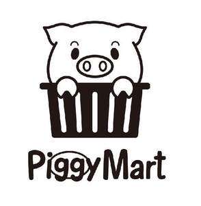

Trade Mark Journal No.2025/051 19 December 2025
UK00004306735 8 December 2025 (11,20,21,24,26,29,30,32)

- Class 11
- Lamps; Coffee roasters; Deep fryers, electric; Electric fans for personal use; Electrically heated mugs; Humidifiers [for household purposes]; USB-powered humidifiers for household use; Electric hot-water bottles; Electric pocket warmers for warming hands; Electrical heating pads, other than for medical [treatment] use; Fitted fabric covers for hot water bottles; Hair dryers; Hand warmers for personal use; Heat pads for warming; Wearable electric fans; Bread toasters; Crepe cookers; Domestic frying pans [electric]; Electric sandwich toasters; Heating pads, electric, not for medical purposes.
- Class 20
- Beds for household pets; Chests of drawers; Cushions; Fans for personal use, non-electric; Mirrors [looking glasses]; Bolsters; Picture frames; Chests for toys; Pet cushions; Hand-held mirrors [toilet mirrors]; Portable desks; Baby bolsters; Back support cushions, not for medical purposes; Nap mats [cushions or mattresses]; Seat cushions; U-shaped pillows; Make-up mirrors for travel use; Table decorations of plastic; Coatstands; Mobiles [decoration].
- Class 21
- Cloths for cleaning; Ice cube moulds; Cake moulds; Oven mitts; Glass flasks [containers]; Soap boxes; Spice sets; Bath sponges; Frying pans; Powder puffs; Containers for household or kitchen use; Tea services [tableware]; Saucers; Cups; Mugs; Coasters, not of paper or textile; Drinking glasses; Lunch boxes; Cup lids; Toothbrushes.
- Class 24
- Tablecloths, not of paper; Bath mitts; Towels of textile; Coasters of textile; Covers for cushions; Picnic blankets; Cloth; Fabrics [piece goods]; Iron-on cloth labels; Beach towels; Face towels; Hand towels of textile; Hooded towels; Turban towels for drying hair; Bed sheets of paper; Children's blankets; Lace table mats not made of paper; Place mats, not of paper; Pillow cases; Handkerchiefs of textile.
- Class 26
- Hair grips; Hair barrettes; Pins, other than jewellery; Charms, other than for jewellery, key rings or key chains; Hair bands; Brooches [clothing accessories]; Shoe trimmings; Decorative articles for the hair; Hair pins; Trimmings for clothing; Badges for wear, not of precious metal; Ornamental novelty badges [buttons]; Bows for the hair; Hair curlers, electric and non-electric, other than hand implements; Sewing kits; Decorative charms for cellular phones; Bobby pins; Fancy goods [embroidery]; Hair slides; Embroidery.
- Class 29
- Yogurt; Fruits, tinned; Flavoured nuts; Butter; Buttercream; Cheese; Fruit pulp; Fat-based spreads for bread slices; Milk beverages, milk predominating; Bacon; Marmalade; Tomato juice for cooking; Fruit-based snack food; Oat milk; Lactic acid drinks; Fish with chips; Meat, tinned; French fries; Potato crisps; Cheese powder.
- Class 30
- Confectionery; Sorbets [ices]; Coffee; Cakes; Chocolate; Ice cream; Ketchup [sauce]; Chips [cereal products]; Crème brûlée; Bread biscuits; Biscuits; Cheesecakes; Danish butter cookies; Candy bars; Chewing candy; Frozen yogurt confections; Cheese sauce; Truffle cream sauces; Xylitol-sweetened sweets; Sugar.
- Class 32
- Carbonated water; Beer; Non-alcoholic fruit juice beverages; Lemonades; Syrups for lemonade; Sarsaparilla [non-alcoholic beverage]; Non-alcoholic honey-based beverages; Beer-based cocktails; Energy drinks; Wheat beer; Cola; Aerated fruit juices; Apple juice beverages; Concentrated fruit juice; Fruit-based beverages; Grape juice; Fruit juice; Mineral water [beverages]; Seltzer water; Table waters.
PiggyMart Co., Limited
Representative: SHENZHEN ZHONG GANGXING SHUNLI INTELLECTUAL PROPERTY AGENCY CO., LTD